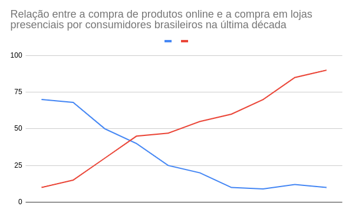

As nossas vendas para os consumidores que vivem dentro do Brasil diminuíram cerca de 10% em comparação com o ano passado, o que indica um aumento no interesse dos brasileiros pela compra de produtos estrangeiros por meio de lojas virtuais, segundo os dados do gráfico 1.
Observe o gráfico abaixo:
